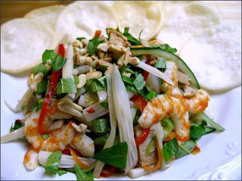

Cùng bắt tay làm thử thôi nào!
Làm gỏi ngó sen sao cho giòn, trắng mà không bị thâm đen thì món này mới ngon và hấp dẫn.
Nguyên liệu:
• 300g ngó sen
• 50g cà rốt cắt sợi
• 200g tôm sú (khoảng 12 con)
• 200g thịt ba rọi
• Rau răm, hành phi, ớt cắt sợi, chanh, đậu phộng rang
• Dấm trắng, đường, nước mắm.
Cách làm:
• Ngó sen chọn loại ngòi viết, cọng nhỏ, chắc, khi ăn sẽ giòn hơn. Chẻ đôi, cắt khúc.
• Hòa hỗn hợp 100ml dấm + 200g đường cho tan. Ngâm ngó sen khoảng trước 1 ngày, khi ngâm cho vào tủ lạnh. Sau khi ngâm, vớt ra, vắt nhẹ cho ráo nước.
• Thịt luộc chín, cắt sợi tương xứng với cọng sen.
• Tôm hấp chín, bóc vỏ, chẻ đôi.
• Trộn ngó sen, cà rốt, rau răm, hành phi, đậu phộng rang, ớt sợi với nước mắm chua ngọt.
Nước mắm trộn gỏi:
100ml nước mắm + 200g đường: Nấu cho tan đường, để nguội, nước mắm sẽ kẹo lại như mật ong.
Khi trộn gỏi cho nước cốt chanh (tùy khẩu vị mà cho chua nhiều hay ít).